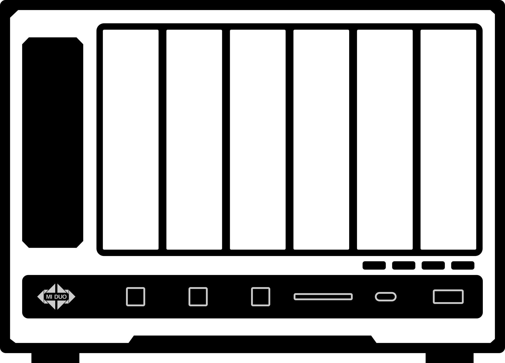

CPU 核心最高—
Package 温度—
实时显示盘位、温度、活动状态和健康信息。
插件仿照 RR CPUinfo，只用标签为 Core N 的传感器最大值作为 CPU 显示温度；Package 热点原值单独保留。插件不会修改飞牛内置资源监控，因此飞牛桌面的原有温度和告警颜色不会改变。
降低功耗可能减少极限性能。风扇曲线依赖 IT87 驱动（安装/启动时由本插件尝试内置 DKMS 安装，已有独立驱动则跳过）；停止或卸载时会恢复首次捕获的功耗限制与 BIOS 风扇模式，但不会卸载 it87 内核模块。
风扇转速和 PWM 控制暂不可用。请确认已安装 dkms、gcc、make 与当前内核的 linux-headers，然后重启本模块。 仍可用独立 IT87 驱动包（可选）
三条曲线分别计算目标转速，始终采用较高值；传感器异常或达到紧急温度时自动满速。
取消勾选后，该槽位温度不再影响风扇；温度缓存约每 60 秒更新。
默认 25°C 使用最低转速、35°C 使用 85%、50°C 使用 100%；温度来自前置 SATA 仓。
取消勾选后，该槽位温度不再影响风扇；全部取消则停用 NVMe 温控曲线。
默认沿用硬盘温控阈值，可独立拖拽调整；温度来自四个 M.2 槽位。
拖动圆点调整 CPU 温度和转速；支持 2–8 个节点，也可使用方向键微调。
最终转速 = HDD/SATA、NVMe 与 CPU 三条曲线目标的最高值；某类盘温暂不可用时，该曲线不参与控制。
温度（左轴，°C）与风扇转速（右轴，占满量程百分比）随时间的变化；采样开关、保存天数等更多设置在“</> 调试”页的“历史温度与风扇控制”。
数据由插件后台每分钟采样一次并写入本地数据库，按设置的保存天数保留；采样开关、大小上限与保存天数在“</> 调试”页的“历史温度与风扇控制”中。插件停止运行期间不采集，重启后曲线会出现断口；长时间范围下服务端会自动按峰值聚合，温度曲线展示区间内的最高温；30 分钟至 24 小时各档支持在图上左右拖动，回看约 8 倍于所选跨度的历史记录。
逐风扇手动设定转速与独立的自动递增测试。勾选接管的风扇脱离温控曲线、仅受行内调试值控制（CPU 超过紧急温度时仍强制全速兜底）；未接管的风扇照常受曲线控制，可与调试中的风扇并存。
勾选“接管”后该风扇脱离温控曲线，仅受行内调试转速控制；取消勾选立即恢复曲线并结束该风扇的自动测试。调试值支持三种单位：转速 RPM（闭环控制——设定目标转速后按反馈实测自动微调 PWM，实测与目标差 ≤3% 即保持；目标初值来自自动学习的 PWM→转速特性表，全速运转时满转基准也会自动标定并随特性表在重启后保留，表随风扇被驱动过的工况自动充实；等不及自然学习可点行内“标定”主动全速数秒一次学到位；实际转速仍以“当前转速”读数为准）、百分比 %（0–100）、PWM（0–255 原始占空比，不带符号），切换单位时数值自动换算并同步。行内“自动测试”滑动开关按风扇独立启停：开启后从当前调试转速起，按该行的递增值与间隔推进，到所选单位上限自动完成并保持；再次开启会从 0 重跑。一个风扇递增期间，其他风扇可照常手动调试。
固定读取主板 GPIO：复制键 0xA04/bit6、网络键 0xA00/bit3、后置重置键 0xA03/bit6（已实测核对）；每个按键的短按与长按 3/9/15 秒都可独立绑定内置动作或自定义 Bash 脚本。
按键映射默认开启；默认只有网络键的短按绑定「刷新 SD 卡」（换卡后读卡器认不出来时按一下），其余按键与档位默认无动作，按需自行绑定。
短按（按一下，松开即执行）与长按均会触发动作。每次按键确认或触发时，都会通过 Linux PC Speaker 滴滴滴响 3 声、并让复制键 LED 闪 3 下（与 RR 插件 tad6s4n10g 表现一致）；反馈设备不可用时只记录日志，不影响动作执行。自定义脚本由插件服务以 root 运行，单次最长 30 秒并限制日志输出。请只保存你完全信任的脚本。
新增或编辑 Bash 脚本后，再到上方长按下拉框选择对应脚本；最后点击“保存按钮控制”统一持久化。
高风险功能：脚本拥有 root 权限，可以修改或删除系统数据。插件只负责固定使用 Bash、限制执行时间和输出大小，不会分析脚本是否安全。
点「浏览…」选好源和目标、挑一种复制方式即可，不用写脚本。保存后在上方按键下拉框里选“备份：任务名”，按一下按键就开始备份。
作用：在源介质里放一个名为 .tad-backup/source 的小文件，内容就是上面的标识。每次备份前会先核对它，对不上就拒绝执行，用来防止 U 盘/移动硬盘插错、或者换接口后挂载到别的路径时复制错盘。如果您的数据需要严谨对待那么请创建标识文件，否则：留空＝不校验。
.tad-backup/source
用法：不需要自己写内容。打开开关会自动生成一串随机标识并立刻写进源介质（标识文件不会被复制到备份里）。请务必在插着正确介质时打开，否则会把错误的盘标成「对的盘」。
备份由系统 rsync 执行、以 root 运行。正式运行前建议先点「试跑」，它会只列出将要复制的文件而不真正写入。
给 U 盘 / 移动硬盘打标（记录在卷内的 .tad-backup/mark.json 里），再建一条规则绑定到按键。按键按下后自动扫描当前插着的所有打标设备逐个执行——同一个按键可以服务任意多块盘，不用为每块盘单独建任务。
.tad-backup/mark.json
打标只写在卷内的 .tad-backup/ 目录里，不会往卷根丢文件。选卷内任意目录即可认定这块盘； 整块卷打标＝整块盘参与，子目录打标可以给多个子目录分别打标（例如 DCIM、VIDEO），之后只操作这些子目录的内容， 导入 NAS 时保留目录名（目标/DCIM/…）。 打标时填个别名，列表里一眼就能认出是哪块盘。 移动类模式（移动覆盖 / 按日期转移归档）在「打标卷 → NAS」方向可直接使用； 反过来（NAS → 打标卷）会删除 NAS 上的源文件，需要逐条勾选确认，并且每次只作用于一块打标盘。
.tad-backup/
目标/DCIM/…
「打标卷 → NAS」方向的卷内范围由打标时标记的子目录决定（整卷打标就是整块卷），这里不用填。
两种移动模式只删除已被 rsync 确认复制成功的文件（复制成功一个删一个），中途出错时没传完的文件仍留在卷里；空目录结构会保留，盘还能继续用。
根据处理器自动提供节能、标准和性能配置，也可切换到自定义功耗。
预设值始终受当前处理器与 RAPL 硬件上限约束；性能模式不会越过插件识别的安全范围。
生成可供排查问题使用的模块诊断报告。报告主体来自调试接口，另附宿主窗口结构信息（标签/类名/背景色，不含文本与地址）用于定位窗口外观问题。
尚未生成报告
可以生成一份新的调试报告。
采样开关、数据库大小上限与保存天数，以及历史数据的导出与清空；曲线与时间范围在“风扇控制”页的历史温度卡片。风扇调试控制在“风扇控制”页，用下方开关启用。
满配设备（4 风扇 + 6 盘位 + 12 传感器）每分钟采样约 0.7 KB，30 天约 30–45 MB；数据库同时受 保留天数与大小上限约束，超限后从最旧的一天开始删除。
守护进程的文本诊断日志（/var/log/tank/tad-module.log），正常情况下近乎空白；超过大小上限会自动截断并保留一代备份。
为温度传感器设置便于辨认的显示名（如多个 temp1），并可选择其归属父类（默认按驱动自动归类）；历史温度与悬浮提示会使用该名称，配置保存在本机，所有设备生效。
切换到历史温度页一次即可列出全部传感器。
经 USB 转串口模块（CH340、CP210x、FTDI 等）接入的温度计：固件逐行输出含温度数字的文本（如 25.6、+25.6、temp:25.6），行内第一个合理温度按摄氏度入库，可同时接多个。读取为间歇轮询（每 5 秒开口读一次），其余时间串口空闲、可被其他程序读取。读数出现在历史温度「其它」分组（键 usb:tty: 开头），可在上方「传感器显示名」改名。设备优先选 by-id 路径（插拔编号不漂移）；两个一模一样的适配器 by-id 会撞名，用 by-path 按物理插口区分。
插入 USB 转串口设备后，下拉框会自动列出候选串口。
为 TANK TAD6S4N 机型定制，其它硬件目前未做完整适配。
当前版本 v—
正在读取模块状态…
显示主机名称、系统版本、CPU 型号温度、风扇转速，以及硬盘位置、温度、活动和健康状态。
通过 HDD、NVMe 和 CPU 三条温度曲线智能调度散热，并支持按风扇独立选择温度来源。
适配前置复制、网络按键和后置 RESET 孔，每个按键支持四种触发时长与自定义 Bash 脚本。
提供节能、标准、性能和自定义功耗模式，直观限制 PL1 与 PL2 功耗墙。
可前往 GitHub 查看源码，或手动检查是否有新版本。进入插件时不会自动联网检查。
点击检查是否有新版本
风扇功能依赖 IT87 驱动（本插件安装时会尝试内置 DKMS）。插件开发：mi-d.cn · TANK
任务会记住这个卷本身（卷标或 UUID）：以后不管插到哪个接口、系统挂载到哪个路径，都能自动找到它。